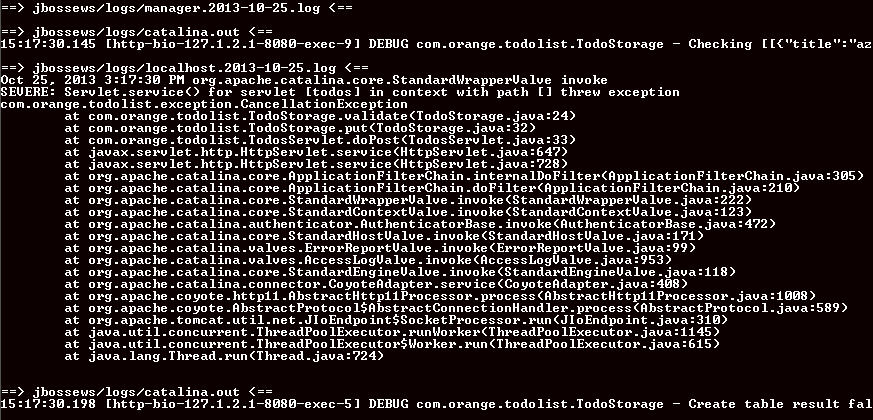
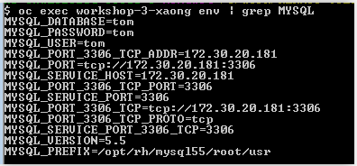

If you didn't do it yet, take time to use the todo list on your left.
Add, delete, close, or update tasks.
Once you understood the todo list behaviors, go to next step.
Try to add the following task:
'Cancel my Orange subscription'
It raise an error ? You may need to watch server logs.
oc get pods | grep Running Copy the name of your pod (ex: workshop-2-djfht)
oc stop pod workshop-Y-XXXXX Kubernetes will automatically start an other pod

You did not understand the previous step ?
To understand, watch the validate method in the source code of the workshop application
src/main/java/com/orange/todolist/TodoStorage.java
Currently, tasks are only stored while application is running.
If you stop your application, all datas will be lost.
Note : you can try to stop your application
oc get pods | grep Running Copy the name of your pod (ex: workshop-2-djfht)
oc stop pod workshop-Y-XXXXX Kubernetes will automatically start an other pod
To avoid this problem, we can add MySQL support, to store tasks.
To add MySQL support to our Todo list, you have to create a MySQL service
On your X/Dos terminal execute the following command:
oc new-app mysql --name="workshop-db" -e MYSQL_USER=workshop_user -e MYSQL_PASSWORD=workshop_pwd -e MYSQL_DATABASE=workshop_db
Now you have to inject MYSQL_XXX env var into your workshop application
oc get pods | grep Running # to get your workshop-db application pod name
oc get deploymentconfigs | grep workshop # to get your workshop application deployment config name
oc exec workshop-db-Y-XXXXX env | grep MYSQL_ | oc env dc/workshop -e -
To check if environment variable have been injected in workshop application :
oc get pods | grep Running # get your workshop pod name
oc exec workshop-Y-XXXXX env | grep MYSQL_
This will display the following output :

Add MySQL service is not enought to be able to store tasks
You need to update your java source code
In the getStorageService method of src/main/java/com/orange/todolist/TodosServlet.java class
Comment the use of TodoStorageInMemory and uncomment the rest of the method TodoStorageJDBCMysql)
Save your file, and commit/push your modification on your github repository
git commit -am "Activate MySQL storage"
git push origin master
To deploy your application with the new release of your code, you just need to rebuild it. If build is successfull, then your new application relase will be automaticcaly deployed
oc start-build workshop
Once the build/deployment finished, reload your browser.
All your tasks disapeared
Create others tasks
Stop your workshop application
oc get pods | grep Running # get the name of your workshop running pod
oc stop pod workshop-Y-XXXXX
Your pod will be stopped and recreated automatically.
Reload your browser. Your tasks are still present, and have been store in mysql database.
At this time we created an application with a MySQL database to store tasks. Unfortunatly we use an ephemeral mysql storage. Indeed if we stop our mysql pod, we will loose all our database content.
To confirm it, stop your mysql database pod :
oc get pods | grep Running # get the mysql running pod name
oc stop pod workshop-db-Y-XXXXX
Reload your browser. All your tasks disapeared.
To avoid this we need persistent storage.
Waiting for persistent volume to be added in prod infra
To be continue....
If you want to learn more, go on Bonus...
Il est possible de se connecter en SSH à l'environnement d'exécution de son application.
rhc ssh {{appName}}
Vous avez accès à un shell restreint qui vous permet, par exemple, de visualiser les variables d'environnement disponibles
env
N'hésitez pas à tester d'autres commandes et à vous ballader dans l'arborescence
Utilisez exit pour quitter votre session ssh
Actuellement, le code applicatif s'assure que les tables Mysql dont on a besoin sont présentes (et les créées au premier lancement avec une base vide)
Pour éviter d'avoir à prendre cette problématique en charge au sein du code Java, il est possible d'utiliser les Action Hooks.
Ces hooks permettent d'éxecuter des scripts durant certaines phases (build, deploy,...) directement sur les machines sur lequelles les applications sont hebergées.
Nous allons utiliser ce mécanisme pour initialiser les données de votre base si elle est vide.
Passons à l'action.
Commençons par supprimer les données existantes.
Pour cela, se connecter en ssh sur votre application:
rhc ssh {{appName}}
Puis, se connecter à votre base mysql:
mysql {{appName}}
Supprimer les lignes présentes dans la table todos
delete from todos;
Utiliser quit pour quitter la session mysql
Utiliser exit pour quitter la session ssh
A la racine du projet, regardez par exemple le fichier .openshift/action_hooks/pre_start_jbossews-2.0
qui comme son nom l'indique est exécuté avant chaque démarrage de jbossews.
Dans ce fichier, une ligne est commentée qui execute un script mysql sur l'instance MySQL associée à notre application (la cartridge MySQL)
Remarque : au sein des action_hooks comme lorsque vous faites du SSH sur votre application, vous avez accès aux variables d'environnement injectées par les cartridges (ici les "login:password@host:port/database")
Le script fait référence à un script sql contenu dans src/main/openshift/init.sql
Décommentez les lignes commentées, poussez le code sur votre application (git add...commit...push..etc.)
Observez les logs du git push
Pour débugguer une application depuis votre IDE, il va falloir activer JPDA sur JBoss puis se connecter aux ports de debug depuis votre IDE
Activer le mode debug de JBoss
Pour activer le support JPDA sur une instance Kermit, il faut utiliser les markers. Ces fichiers permettent entre autre de configurer les cartridges que votre application utilise.
Dans notre cas, à la racine du projet, il faut faire :
touch .openshift/markers/enable_jpda
git add .openshift/markers/enable_jpda
git commit -m "enable jdpa"
git push
Une fois que l'application a redémarré, les ports JPDA sont en écoute sur l'application.
Cependant, il est impossible de joindre ces ports qui sont attachés à des IP internes à Kermit.
Forwarder les ports de debug jusqu'à la machine locale
Pour les joindre, il va falloir utiliser le mécanisme de port-forwarding en lançant :
rhc port-forward {{appName}}
Ensuite, il suffit de lancer une session de remote-debug depuis votre IDE pour debugger localhost:8787
Comment publier mon application sur Internet ?
Si vous êtes sur une instance Kermit qui le propose (Orange Beta), il suffit de faire :
rhc alias add {{appName}} {{appPublicDNS()}}